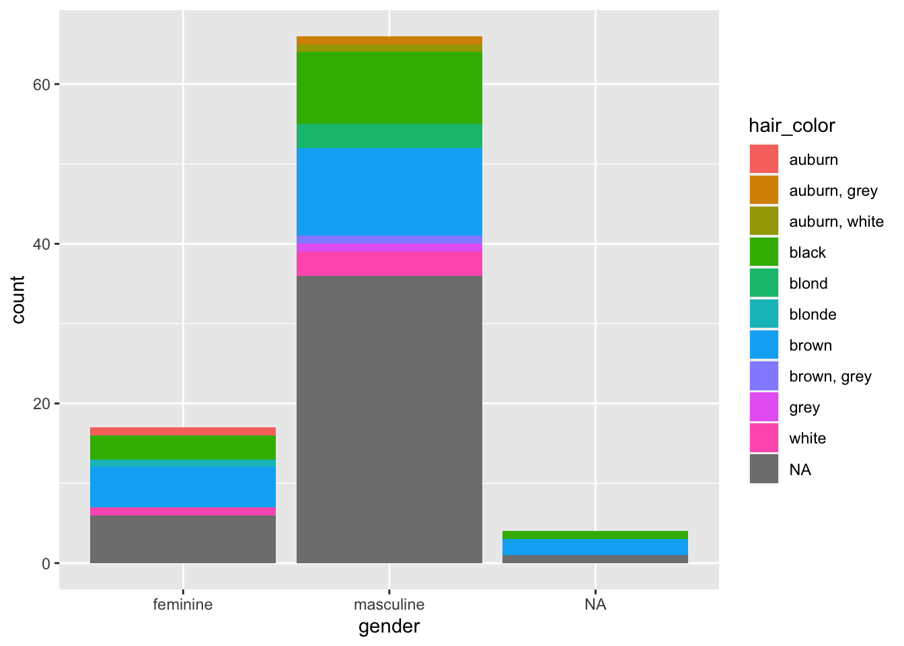
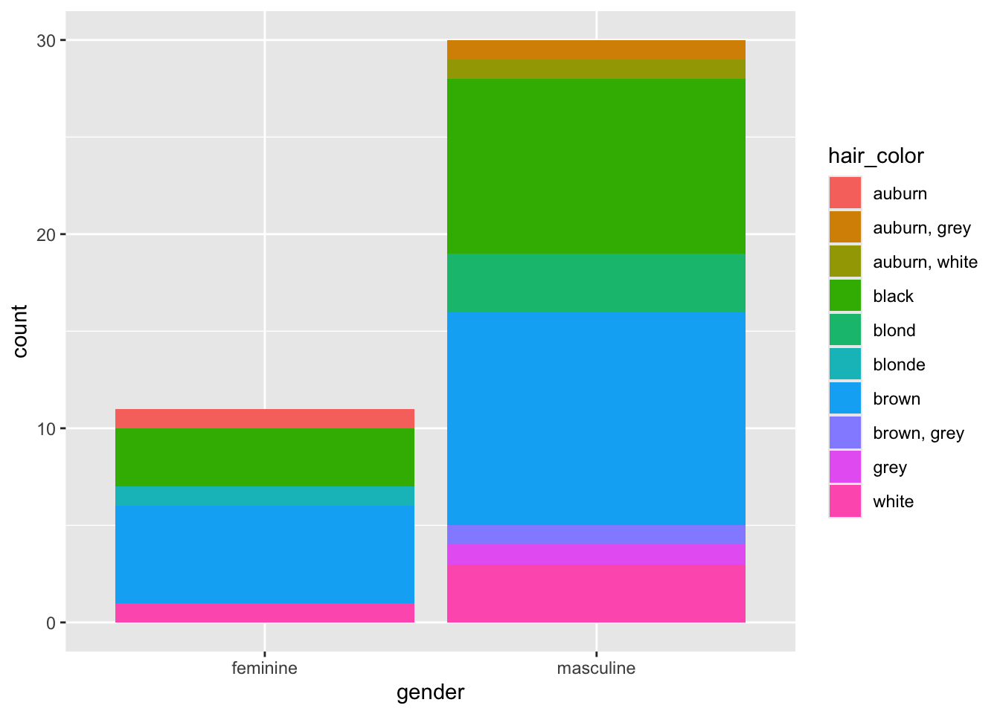

library(tidyverse)5 Puuduvad väärtused
5.1 Miks vaadata puuduvad väärtusi?
Puuduvaid väärtusi on vaja vaadata eraldi, et teha selgeks, miks puuduv väärtus on puuduv. Võib-olla tahad puuduvat väärtus asendada mõne muu kategooriaga. Nt “teadmata”, “keeldub vastamast”, “ei ole võimalik vastata”, sest puudub osalus jne. Või siis on soov vastupidi keerata mingid kategooriad NA-ks, sest arvutamisel pole vahet, kas “keeldus vastamast” või “ei osanud vastata”.
Puuduvaid väärtuseid tahame teada, et olla kindel kas puuduvad väärtused on puuduvad juhuslikult või mingi kindla mustri järgi. Mustrit ei näe sellest tunnusest, kus on puuduvad väärtused vaid mõne muu tunnuse pealt. Andmeid saab analüüsida küll, aga neid raporteerides peab ära märkima, miks on puuduvad väärtused ja mis mustriga.
5.2 Mida teha puuduvate väärtustega?
Puuduvate väärtustega toimetulek võib tähendada viite lähenemist.
- Kustutada kõik read, kus on puuduvad väärtused (äärmuslik).
- Kustutada need read, kus on puuduv väärtus kindlas tunnuses.
- Muuta puuduva väärtus mingiks kindlaks väärtuseks (nt “teadmata”).
- Vastupidi, muuta kindel väärtus hoopis
NAks (näiteks0,"-"või" "). - Muuta puuduv väärtus mingiks “best-guess” väärtuseks (nt keskmine). Vaata tunnuste sisu muutmist siit.
data(starwars)Puuduvate väärtuste leidmine
Kasutan näiteks uuesti starwars andmestikku, aga jätan sealt välja need tunnused, mis sisaldavad liste.
- 1
- valin tunnused, et eemaldada testandmestikust “list” tüüpi tunnused
- 2
- Tuletan meelde, kui palju on andmestikus ridu.
[1] 87Seejärel vaatan andmestiku päist.
starwars%>%
head()# A tibble: 6 × 11
name height mass hair_color skin_color eye_color birth_year sex gender
<chr> <int> <dbl> <chr> <chr> <chr> <dbl> <chr> <chr>
1 Luke Sky… 172 77 blond fair blue 19 male mascu…
2 C-3PO 167 75 <NA> gold yellow 112 none mascu…
3 R2-D2 96 32 <NA> white, bl… red 33 none mascu…
4 Darth Va… 202 136 none white yellow 41.9 male mascu…
5 Leia Org… 150 49 brown light brown 19 fema… femin…
6 Owen Lars 178 120 brown, gr… light blue 52 male mascu…
# ℹ 2 more variables: homeworld <chr>, species <chr>Näeme, et meie andmestik sisaldab puuduvaid väärtusi. Üks võimalus puuduvatest väärtustest vabanemiseks on kasutada käsku na.omit()
starwars%>%
na.omit()# A tibble: 29 × 11
name height mass hair_color skin_color eye_color birth_year sex gender
<chr> <int> <dbl> <chr> <chr> <chr> <dbl> <chr> <chr>
1 Luke Sk… 172 77 blond fair blue 19 male mascu…
2 Darth V… 202 136 none white yellow 41.9 male mascu…
3 Leia Or… 150 49 brown light brown 19 fema… femin…
4 Owen La… 178 120 brown, gr… light blue 52 male mascu…
5 Beru Wh… 165 75 brown light blue 47 fema… femin…
6 Biggs D… 183 84 black light brown 24 male mascu…
7 Obi-Wan… 182 77 auburn, w… fair blue-gray 57 male mascu…
8 Anakin … 188 84 blond fair blue 41.9 male mascu…
9 Chewbac… 228 112 brown unknown blue 200 male mascu…
10 Han Solo 180 80 brown fair brown 29 male mascu…
# ℹ 19 more rows
# ℹ 2 more variables: homeworld <chr>, species <chr>Käsu na.omit() kasutamine on õigustatud ainult siis, kui tead täpselt, kus on puuduvad väärtused, miks nad on puuduvad ja kui palju neid on.
Meid aga huvitab, kus kohas need puuduvad väärtused ja tahame nad välja filtreerida. Abiks on käsk complete.cases(.). Puuduvate väärtuste tuvastamiseks on mõistlikum pöörata käsk tagurpidi ja küsida välja read, mis sisaldavad puuduvaid väärtusi ehk !complete.cases(.)
starwars%>%
filter(!complete.cases(starwars))# A tibble: 58 × 11
name height mass hair_color skin_color eye_color birth_year sex gender
<chr> <int> <dbl> <chr> <chr> <chr> <dbl> <chr> <chr>
1 C-3PO 167 75 <NA> gold yellow 112 none mascu…
2 R2-D2 96 32 <NA> white, bl… red 33 none mascu…
3 R5-D4 97 32 <NA> white, red red NA none mascu…
4 Wilhuff… 180 NA auburn, g… fair blue 64 male mascu…
5 Greedo 173 74 <NA> green black 44 male mascu…
6 Jabba D… 175 1358 <NA> green-tan… orange 600 herm… mascu…
7 Jek Ton… 180 110 brown fair blue NA <NA> <NA>
8 Yoda 66 17 white green brown 896 male mascu…
9 IG-88 200 140 none metal red 15 none mascu…
10 Mon Mot… 150 NA auburn fair blue 48 fema… femin…
# ℹ 48 more rows
# ℹ 2 more variables: homeworld <chr>, species <chr>Näiteks näeme, et puuduvad väärtused on ridamisi hair_color tunnuse all.
Puuduvate väärtuste vaatamine
Soovime puuduvad väärtused välja filtreerida, et vaadata neid tegelasi lähemalt, kellel on juuksevärvi info puudu. Käsk is.na() annab TRUE/FALSE vastuse ning on sedasorti filteerimiseks ideaalne.
starwars%>%
1 filter(is.na(hair_color))%>%
select(name, species, hair_color)- 1
- Näita neid ridu, kus tunnuse väärtus on puudu
# A tibble: 5 × 3
name species hair_color
<chr> <chr> <chr>
1 C-3PO Droid <NA>
2 R2-D2 Droid <NA>
3 R5-D4 Droid <NA>
4 Greedo Rodian <NA>
5 Jabba Desilijic Tiure Hutt <NA> Puuduvate väärtuste ringikodeerimine
Nüüd selgub, et kõik need, kellel on juuksevärv puudu on tegelased, kellel polegi juukseid. Saame need tegelased alles jätta ja ringi kodeerida.
starwars$hair_color<-replace_na(starwars$hair_color, "none")starwars%>%
select(hair_color)%>%
table()hair_color
auburn auburn, grey auburn, white black blond
1 1 1 13 3
blonde brown brown, grey grey none
1 18 1 1 43
white
4 Väärtuste märkimine puuduvaks
Nüüd soovin, et hair_color tunnuse grupp “none” oleks andmesitkus NA.
Mõtle hoolega läbi, kas tahad muuta tunnust või mitte. “Pole juukseid” ehk “none” on igal juhul selge info selle kohta, miks juuksevärvi pole andmetes kirjas. NA peaks tähendama ikka seda, et info juuste olemasolu ja värvi kohta täielikult info puudub.
Kasutada saab käsku na_if().
starwars$hair_color<-na_if(starwars$hair_color, "none")Puuduvate väärtuste kõrvale jätmine
Näiteks tahame teha graafikut, kuidas jaguneb tunnus “hair_color”.
Andmete visuaalse esitamise kohta tuleb eraldi peatükk, mis tutvustab põhjalikumalt paketti ggplot2 (Wickham 2016) kasutamist (mis on ka osa tidyverse pakettidest). Need joonised ei ole “head” joonised. Praegu õpime käsu drop_na() kasutamist.
Vaikimisi paneb R ka puuduvad väärtused pildile.
starwars%>%
ggplot(aes(x=gender, fill=hair_color))+
geom_bar()
Käsuga drop_na()- saab öelda, mis tunnuse NA väärtused järgmistest sammudest kõrvale jätta ilma, et peaks andmestikust ridu eemaldama hakkama.
starwars%>%
1 drop_na(hair_color, gender)%>%
ggplot(aes(gender, fill=hair_color))+
geom_bar()- 1
- Eemaldab tühjad väärtused tunnusest, et neid pildil mitte kuvada.
